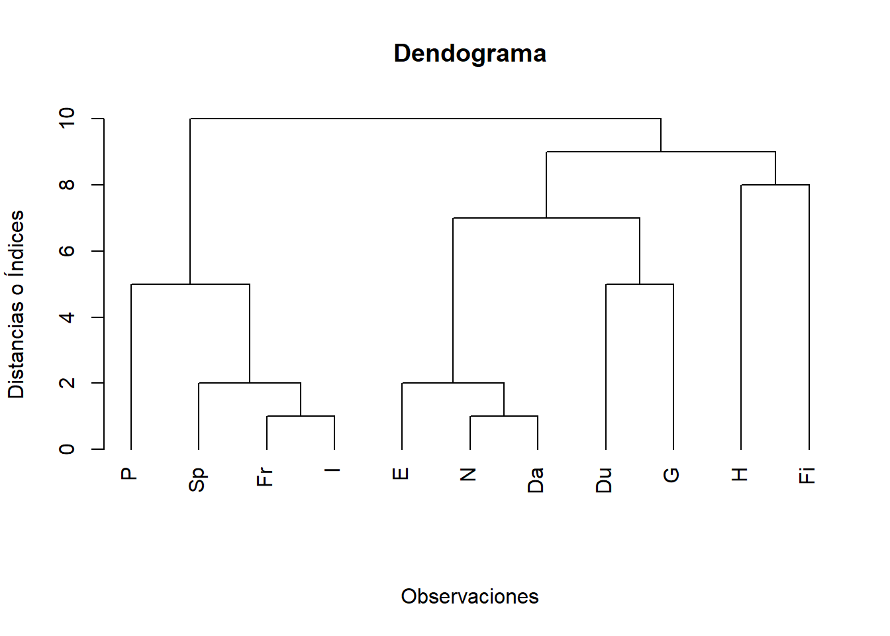

10.5 Métodos Jerárquicos de Agrupamiento
Rara vez se pueden examinar todas las posibilidades de agrupación, incluso con las computadoras más grandes y rápidas. Debido a este problema, se han desarrollado una amplia variedad de algoritmos de agrupamiento, lo cuales dan soluciones que encuentran agrupamientos “razonables” sin tener que mirar todas las posibles configuraciones.
Existen varios algoritmos propuestos para la conformación de conglomerados, entre los cuales están: los métods jerárquicos, los métodos no-jerárquicos o de partición, los métodos de nubes dinámicas, los métodos de clasificación difusa y algunas herramientas de tipo gráfico.
Los Métodos de Agrupamiento Jerárquicos, proceden o bien sea de una serie de fusiones sucesivas o de una serie de divisiones sucesivas. Los Métodos de Agrupamientos Jerárquicos Aglomerativos comienzan con los objetos individuales. Por tanto, inicialmente hay tantos clusters o gurpos como objetos. Primero se agrupan los objetos más similares y estos grupos iniciales se fusionan de acuerdo a sus similaridades. Finalmente, a medida que la similaridad decrece, todos los subgrupos se fusionan en un solo grupo.
Los Métodos de Agrupamientos Jerárquicos de División funcionan en la dirección opuesta. Un solo grupo inicial de objetos se divide en dos subgrupos de modo que los objetos de un subgrupo están “lejos de” los objetos del otro. Estos subgrupos luego se dividen en subgrupos disimilares; el proceso continúa hasta que haya tantos subgrupos como objetos, es decir, hasta que cada objeto forme un grupo.
Los resultados de los Métodos de Agrupamientos Aglomerativos y de división, se pueden mostrar en la forma de un diagrama bidimensional conocido como Dendograma. Como se verá, el dendrograma ilustra las fusiones o divisiones que se han realizado en los niveles sucesivos de acuerdo a la matriz de similaridades.
Cada uno de estos métodos representa una perspectiva diferente para la formación de los conglomerados, con resultados generalmente distintos cuando las diferentes metodologías se aplican sobre el mismo conjunto de datos. Se debe emplear una metodología concordante con la naturaleza de la tipología esperada, o comparar varios métodos.
Los Métodos de Agrupamientos Jerárquicos, empiezan con el cálculo de la matriz de distancias entre objetos. Se forman grupos o conglomerados de manera aglomerativa o por un proceso de división o dasaglomerativa.
Los Métodos de Agrupamientos Jerárquicos más utilizados en la practica son los Métodos de Agrupamientos Jerárquicos Aglomerativos, y en particular los Métodos de Enlace que se discuten a continuación.
Independientemente del proceso de agrupamiento, hay diversos criterios para ir formando los conglomerados; todos estos criterios se basan en una Matriz de Distancias o Similaridades. Los procedimientos de agrupamientos jerárquicos y otras técnicas de aglomeración se pueden ver en Anderberg (1977) y Everitt (2001).
10.5.1 Métodos Jerarquicos de Enlaces para Agupamientos Aglomerativos
Los Métodos de Enlaces son adecuados para agrupar tanto a elementos u observaciones como variables. Esto no es cierto para todos los procedimientos de agrupamientos jerárquicos.
Pasos o etapas en un Proceos de Enlace Jerarquico Aglomerativo:
Se inicia con \(N\) grupos, cada uno de los cuales contiene una sola Observación y con una matriz de distancias (o similaridades) denotada por \(\mathbf{D}=[d_{ij}]_{n\times n}\).
Se busca en la matriz de distancias el par de observaciones o elementos (o conglomerados individuales) con la distancia más pequeña, digamos por ejemplo, las observaciones \(U\) y \(V\) (o conglomerados individuales \(U\) y \(V\)). Se denota la distancia entre los objetos \(U\) y \(V\) (o conglomerados individuales \(U\) y \(V\)) “más similares” como \(d_{UV}\).
Se fusionan los grupos o agrupamientos denotados por \(U\) y \(V\), dicho grupo nuevo recién formado se etiqueta por (\(UV\)). Se actualizan las entradas en la matriz de distancia de la siguiente forma:
Se eliminan las filas y columnas correspondientes a los grupos \(U\) y \(V\) y
Se agrega una fila y una columna que proporcionen las distancias entre el nuevo grupo recién formado (\(UV\)) y los grupos restantes (o conglomerados individuales).
- Se repiten los pasos 2 y 3 un total de \(n-1\)-veces. (Todos las observaciones estarán en un solo cluster después de que termine el algoritmo). Se registra la identidad de los clusters que se fusionan y los distintos niveles o índices (o distancias o similaridades) en los que se producen las respectivas fusiones.
Las ideas detrás de cualquier procedimiento de agrupamiento probablemente se transmitan mejor a través de ejemplos, que se presentarán después de breves discusiones sobre las entradas y componentes del algoritmo de los métodos de enlaces.
Entre los Métodos de Enlaces Aglomerativos Jerárquicos están los siguientes:
Método de enlace Simple o Método del Vecino más Cercano.
Método de enlace Completo o Método del Vecino más Lejano.
Método de enlace promedio.
Método del centroide. (Consultar)
Método de la mediana. (Consultar)
Método de Ward (Consultar).
Fallas de los Métodos de Enlaces Aglomerativos Jerárquicos para Agrupamientos:
Los cálculos requeridos en los algoritmos son muy numerosos, aunque aritméticamente simples.
Son algo inestables cuando se extraen casos u objetos del análisis, por lo tanto son sensibles a la presencia de outliers.
A excepción del Métodos de Asociación Simple, los demás métodos tienen el inconveniente de que generan diferentes soluciones al reordenar los datos en la matriz de similaridades.
10.5.1.1 Método de Enlace Simple o del Vecino Más Cercano
Las entradas a un algoritmo de enlace único pueden ser distancias o similaridades entre los pares de observaciones. Los grupos se forman a partir de entidades individuales fusionando a los vecinos más cercanos, donde el término vecino más cercano connota con la distancia más pequeña o con la similaridad más grande.
Después de iniciar con tantos grupos como objetos se tengan disponibles, se juntan los dos casos que estén a la menor distancia o dentro de un límite de similaridad propuesto. Estos dos objetos forman el primer conglomerado.
En la siguiente etapa, puede ocurrir que un tercer objeto se una a los dos ya agrupados o que se una a otro más cercano a él para formar un segundo conglomerado. La decisión se basa en establecer si la distancia entre el tercer objeto y el primer conglomerado es menor que la distancia entre éste objeto y otro de los objetos no-agrupados. El proceso se desarrolla hasta que todos los objetos queden dentro de un mismo conglomerado.
La disimilaridad o distancia entre dos grupos es el mínimo de las disimilaridades entre las observaciones de uno y de otro grupo. Tomamos la disimilaridad de los objetos que más se parecen en uno y otro grupo.
Un enlace simple se produce cuando los grupos se fusionan de acuerdo a la distancia más cercana entre sus miembros.
La distancia entre el conglomerado \(A\) y el conglomerado \(B\) se define como sigue: \[ d_{AB}=\underset{a_i \in A\ ;\ b_j \in B}{ \text{mín}} \{d_{a_i\ , \ b_j} \}, \]
Por ejemplo, \[ d_{\{AB\}\ ,\ \{C\}}= \text{mín} \{ d_{AC} \ , \ d_{BC} \}. \]
Ejemplo 10.5 (Ejemplo Sobre Agrupamiento con Enlace Simple) Suponga que cinco objetos se encuentran a las siguientes distancias:
\[ \begin{array}{c|ccccc} &O_1&O_2&O_3&O_4&O_5\\\hline O_1 & 0 & 3 & 7 & 11 & 10\\ O_2 & & 0 & 6 & 10 & 9 \\ O_3 & & & 0 & 5 & 6 \\ O_4 & & & & 0 & 4\\ O_5 & & & & & 0 \end{array} \]
A una distancia de cero, los 5 objetos conforman cada uno un grupo o conglomerado.
Ahora, la \(\min(d_{ij})=d_{O_1,O_2}=3\), luego a una distancia de 3, se tienen 4-cluster o conglomerados dados por: \[ \{O_1,O_2 \} \ , \ \{ O_3\} \ , \ \{O_4\} \ , \ \{O_5 \}. \]
Ahora, se forma la nueva matriz de distancias entre estos cuatro grupos de la sigueinte forma: \[ d_{\{O_1,O_2 \},\{O_3 \} }=\text{Mín} \{d_{O_1,O_3} \ , \ d_{O_2,O_3} \}=\text{Mín} \{ 7,6\}=6\\ d_{\{O_1,O_2 \},\{O_4 \} }=\text{Mín} \{d_{O_1,O_4} \ , \ d_{O_2,O_4} \}=\text{Mín} \{ 11,10\}=10\\ d_{\{O_1,O_2 \},\{O_5 \} }=\text{Mín} \{d_{O_1,O_5} \ , \ d_{O_2,O_5} \}=\text{Mín} \{ 10,9 \}=9 \]
además, \[ d_{O_3,O_4}=5 \ , \ \ d_{O_3,O_5}=6 \ , \ \ d_{O_4,O_5}=4. \]
Ahora, se tiene la siguiente nueva matriz de distancias entre los 4 conglomerados: \[ \begin{array}{c|cccc} &\{O_1,O_2 \} & \{O_3 \}&\{O_4 \} & \{O_5 \} \\\hline \{O_1,O_2 \} & 0 & 6 & 10 & 9 \\ \{O_3 \} & & 0 & 5 & 6\\ \{O_4 \} & & & 0 & 4 \\ \{O_5 \} & & & & 0 \end{array} \]
Ahora, la distancia mínima es: \(d_{O_4,O_5}=4\), luego a una distancia de 4 se tienen los siguientes tres conglomerados:
\[ \{O_1,O_2 \} \ , \ \{ O_3\} \ , \ \{O_4 , O_5 \}, \]
y la nueva matriz de distancias para estos tres grupos es: \[ \begin{array}{c|ccc} & \{O_1,O_2 \}&O_3 &\{O_4,O_5 \}\\\hline \{O_1,O_2 \} & 0 & 6 & 9 \\ O_3 & & 0 & 5 \\ \{O_4,O_5 \} & & & 0 \end{array} \]
Ahora, la distancia mínima es: $d_{O_3 , {O_4,O_5 }}=5 $, es decir que, a una distancia de 5 se tienen los siguientes dos conglomerados:
\[ \{O_1,O_2 \} \ , \ \{ O_3 , O_4 , O_5 \}, \]
y la matriz de distancias de estos dos grupos es: \[ \begin{array}{c|cc} & \{O_1,O_2 \} & \{ O_3 , O_4 , O_5 \}\\\hline \{O_1,O_2 \} & 0 & 6 \\ \{ O_3 , O_4 , O_5 \} & & 0 \end{array} \]
Luego a una distancia de 6 se forma un sólo conglomerado dado por: \[ \{O_1,O_2, O_3 , O_4 , O_5 \}. \]
En resumen se tiene lo siguiente:
\[ \begin{array}{c|ccccc} Índices o Distancias & & Conglomerados && \\\hline &&&&&\\ 0 & \{O_1 \} &\{O_2 \} &\{O_3 \} &\{O_4 \} & \{O_5 \} \\ &&&&&\\ 3 & \{O_1 , O_2 \} &\{O_3 \} &\{O_4 \} & \{O_5 \} & \\ &&&&&\\ 4 & \{O_1 , O_2 \} &\{O_3 \} &\{O_4 , O_5 \} & & \\ &&&&&\\ 5 & \{O_1 , O_2 \} & \{O_3 , O_4 , O_5 \} & & & \\ &&&&&\\ 6 & \{O_1 , O_2 , O_3 , O_4 , O_5 \} & & & & \end{array} \]
Ahora, se tiene el siguiente dendograma del proceso de agrupamiento.
Ejemplo 10.6 (Ejemplo-2 Sobre Agrupamiento con Enlace Simple) Suponga que once objetos tienen la siguiente matriz de simiaridades o distancias:
\[ \begin{array}{c|ccccccccccc} &E&N&Da&Du&G&Fr&Sp&I&P&H&Fi\\\hline E & 0 & 2 & 2 & 7 & 6 &6&6&6&7&9&9\\ N & 2 & 0 & \color{red}{\mathbf{1}} & 5 & 4 &6&6&6&7&8&9\\ Da & 2 & \color{red}{\mathbf{1}} & 0 & 6 & 5 &6&5&5&6&8&9\\ Du &7 & 5 & 6 &0&5&9&9&9&10&8&9\\ G & 6 & 4 & 5& 5 & 0 &7&7&7&8&9&9\\ Fr & 6 &6 &6 & 9 &7 &0&2&\color{red}{\mathbf{1}}&5&\mathbf{1}0&9\\ Sp &6 & 6 &5 &9 & 7 &\color{blue}{\mathbf{2}}&0&\color{red}{\mathbf{1}}&3&\mathbf{1}0&9\\ I & 6 & 6 & 5 & 9 & 7 &\color{red}{\mathbf{1}}&\color{red}{\mathbf{1}}&0&4&10&9\\ P & 7 & 7 & 6 & 10& 8 &5&3&4&0&10&9\\ H & 9 & 8 & 8 & 8 &9&10&10&10&10&0&8\\ FI & 9 & 9 & 9 & 9 &9&9&9&9&9&8&0 \end{array} \]
Al buscar por la mínima distancia entre pares de conglomerados (o de cluster individuales) se observa que esta corresponde a la distancia de 1 para los siguientes pares: \[ d_{Da\ , \ N}=1, d_{Fr \ , \ I}=1, d_{Sp\, \ I}=1 \]
En este caso se tiene que las distancias:
\[ d_{Fr \ , \ I}=d_{Sp\, \ I}=1 \]
y como la \(d_{Fr\ , \ Sp}=2\), solo se pueden fusionar las observaciones (o cluster individuales) \(Fr\) e \(I\) o las observaciones o clustar individuales \(Fr\) y \(Sp\). No se pueden fusionar los cluster Fr, Sp e I al nivel de 1.
Se decide fusionar primero a \(Fr\) e \(I\) y actualizar la matriz de distancias para obtener:
\[ \begin{array}{c|cccccccccc} &E&N&Da&Du&G&Fr-I&Sp&P&H&Fi\\\hline E & 0 & 2 & 2 & 7 & 6 &6&6&7&9&9\\ N &2 & 0 & \color{red}{\mathbf{1}} & 5 & 4 &6&6&7&8&9\\ Da &2 & \color{red}{\mathbf{1}} & 0 & 6 & 5 &5&5&6&8&9\\ Du &7 &5 &6 &0&5&9&9&10&8&9\\ G & 6 & 4 &5 &5 & 0 &7&7&8&9&9\\ Fr-I &6 &6 &5 &9 &7 &0&\color{red}{\mathbf{1}}&4&10&9\\ Sp &6 &6 &5 &9 &7 &\color{red}{\mathbf{1}}&0&3&10&9\\ P & 7 & 7 &6 &10 & 8 &4&3&0&10&9\\ H & 9 & 8 & 8 & 8 &9&10&10&10&0&8\\ FI &9 &9 &9 &9 &9&9&9&9&8&0 \end{array} \]
Ahora se fusionan \(Da\) y \(N\) para obtener:
\[ \begin{array}{c|ccccccccc} &E&Da-N&Du&G&Fr-I&Sp&P&H&Fi\\\hline E & 0 & 2 & 7 & 6 &6&6&7&9&9\\ Da-N &2 & 0 & 5 & 4 &5&5&6&8&9\\ Du & 7 &5 &0&5&9&9&10&8&9\\ G & 6 & 4 & 5 & 0 &7&7&8&9&9\\ Fr-I &6 &5 &9 &7 &0&\color{red}{\mathbf{1}}&4&10&9\\ Sp & 6 &5 &9 &7 &\color{red}{\mathbf{1}}&0&3&10&9\\ P & 7 & 6 & 10& 8 &4&3&0&10&9\\ H & 9 & 8 & 8 &9&10&10&10&0&8\\ FI & 9 & 9 & 9 &9&9&9&9&8&0 \end{array} \]
Ejemplo 10.7 (Ejemplo-3 Sobre Agrupamiento con Enlace Simple) Suponga que cinco objetos se encuentran a las siguientes distancias:
\[ \begin{array}{c|ccccc} &O_1&O_2&O_3&O_4&O_5\\\hline O_1 & 0 & 9 & 3 & 6 & 11\\ O_2 & & 0 & 7 & 5 & 10 \\ O_3 & & & 0 & 9 & 2 \\ O_4 & & & & 0 & 8\\ O_5 & & & & & 0 \end{array} \]
El dendograma del proceso de agrupamiento.
10.5.1.2 Método de Enlace Completo o del Vecino Más Lejano
En este método de enlace se inicia igual que en el enlace simple, encontrando la mínima entrada en la matriz de distancias y juntando los correspondientes elementos (o conglomerados individuales) para formar un nuevo primer conglomerado, digamos por ejemplo, \(\{AB\}\).
Ahora se toma como disimilaridad o distancia entre los grupos el máximo de las disimilaridades, en definitiva, la disimilaridad entre los objetos más alejados o más distintos.
Un enlace completo se produce cuando los grupos se fusionan de acuerdo a la distancia más lejanos entre sus miembros.
Luego, la distancia entre este conglomerado \(\{AB\}\) y otro cluster (o elemento), digamos \(\{C \}\), se obtiene de la siguiente forma:
\[ d_{AB}=\underset{i \in A; j \in B}{ \text{máx}} \{d_{ij} \}, \]
es decir, \(d_{AB}\):distancia entre los miembros más alejados de \(A\) y \(B\)
\[ d_{\{AB\},\{C\}}= \text{máx} \{ d_{AC} \ , \ d_{BC} \}. \]
Ejemplo 10.8 (Ejemplo-1 Sobre Agrupamiento con Enlace Completo) Suponga que cinco objetos se encuentran a las siguientes distancias:
\[ \begin{array}{c|ccccc} &O_1&O_2&O_3&O_4&O_5\\\hline O_1 & 0 & 3 & 7 & 11 & 10\\ O_2 & & 0 & 6 & 10 & 9 \\ O_3 & & & 0 & 5 & 6 \\ O_4 & & & & 0 & 4\\ O_5 & & & & & 0 \end{array} \]
A una distancia de cero, los 5 objetos conforman cada uno un grupo o conglomerado.
Ahora, la mín\(d_{ij}=d_{O_1,O_2}=3\), luego a una distancia de 3, se tienen 4-cluster o conglomerados dados por:
\[ \{O_1,O_2 \} \ , \ \{ O_3\} \ , \ \{O_4\} \ , \ \{O_5 \}. \]
Ahora, las distancias entre estos cuatro grupos son:
\[ d_{\{O_1,O_2 \},\{O_3 \} }=\text{Máx} \{d_{O_1,O_3} \ , \ d_{O_2,O_3} \}=\text{Máx} \{ 7,6\}=7 \]
\[ d_{\{O_1,O_2 \},\{O_4 \} }=\text{Máx} \{d_{O_1,O_4} \ , \ d_{O_2,O_4} \}=\text{Máx} \{ 11,10\}=11 \]
\[ d_{\{O_1,O_2 \},\{O_5 \} }=\text{Máx} \{d_{O_1,O_5} \ , \ d_{O_2,O_5} \}=\text{Máx} \{ 10,9 \}=10 \]
\[ d_{O_3,O_4}=5 \ , \ \ d_{O_3,O_5}=6 \ , \ \ d_{O_4,O_5}=4. \] Ahora, se tiene la siguiente nueva matriz de distancias entre los 4 conglomerados:
\[ \begin{array}{c|cccc} &\{O_1,O_2 \} & \{O_3 \}&\{O_4 \} & \{O_5 \} \\\hline \{O_1,O_2 \} & 0 & 7 & 11 & 10 \\ \{O_3 \} & & 0 & 5 & 6\\ \{O_4 \} & & & 0 & 4 \\ \{O_5 \} & & & & 0 \end{array} \]
Ahora, la distancia mínima es: \(d_{O_4,O_5}=4\), luego a una distancia de 4 se tienen los siguientes tres conglomerados:
\[ \{O_1,O_2 \} \ , \ \{ O_3\} \ , \ \{O_4 , O_5 \}, \]
y la nueva matriz de distancias para estos tres grupos es:
\[ \begin{array}{c|ccc} & \{O_1,O_2 \}&O_3 &\{O_4,O_5 \}\\\hline \{O_1,O_2 \} & 0 & 7 & 11 \\ O_3 & & 0 & 6 \\ \{O_4,O_5 \} & & & 0 \end{array} \]
Ahora, la distancia mínima es: $d_{O_3 , {O_4,O_5 }}=6 $, es decir que, a una distancia de 6 se tienen los siguientes dos conglomerados:
\[ \{O_1,O_2 \} \ , \ \{ O_3 , O_4 , O_5 \}, \]
y la matriz de distancias de estos dos grupos es:
\[ \begin{array}{c|cc} & \{O_1,O_2 \} & \{ O_3 , O_4 , O_5 \}\\\hline \{O_1,O_2 \} & 0 & 11 \\ \{ O_3 , O_4 , O_5 \} & & 0 \end{array} \]
Luego a una distancia de 11 se forma un sólo conglomerado dado por: \[ \{O_1,O_2, O_3 , O_4 , O_5 \}. \]
En resumen se tiene lo siguiente:
\[ \begin{array}{c|ccccc} Índices o Distancias & & Conglomerados&& \\\hline &&&&&\\ 0 & \{O_1 \} &\{O_2 \} &\{O_3 \} &\{O_4 \} & \{O_5 \} \\ &&&&&\\ 3 & \{O_1 , O_2 \} &\{O_3 \} &\{O_4 \} & \{O_5 \} & \\ &&&&&\\ 4 & \{O_1 , O_2 \} &\{O_3 \} &\{O_4 , O_5 \} & & \\ &&&&&\\ 6 & \{O_1 , O_2 \} & \{O_3 , O_4 , O_5 \} & & & \\ &&&&&\\ 11 & \{O_1 , O_2 , O_3 , O_4 , O_5 \} & & & & \end{array} \]
Ahora, se tiene el siguiente dendograma del proceso de agrupamiento.
En este caso la determinación de los grupos en un nivel específico es ahora más clara que en el caso anterior.
Ejemplo 10.9 (Ejemplo-2 Sobre Agrupamiento con Enlace Completo) Suponga que cinco objetos se encuentran a las siguientes distancias:
\[ \begin{array}{c|ccccc} &O_1&O_2&O_3&O_4&O_5\\\hline O_1 & 0 & 9 & 3 & 6 & 11\\ O_2 & & 0 & 7 & 5 & 10 \\ O_3 & & & 0 & 9 & 2 \\ O_4 & & & & 0 & 8\\ O_5 & & & & & 0 \end{array} \]
Ahora, se tiene el siguiente dendograma del proceso de agrupamiento.
Ejemplo 10.10 (Ejemplo-3 Sobre Agrupamiento con Enlace Completo) Suponga que once objetos tienen la siguiente matriz de simiaridades o distancias:
\[ \begin{array}{c|ccccccccccc} &E&N&Da&Du&G&Fr&Sp&I&P&H&Fi\\\hline E & 0 & 2 & 2 & 7 & 6 &6&6&6&7&9&9\\ N & 2 & 0 & \color{red}{\mathbf{1}} & 5 & 4 &6&6&6&7&8&9\\ Da & 2 & \color{red}{\mathbf{1}} & 0 & 6 & 5 &6&5&5&6&8&9\\ Du &7 & 5 & 6 &0&5&9&9&9&10&8&9\\ G & 6 & 4 & 5& 5 & 0 &7&7&7&8&9&9\\ Fr & 6 &6 &6 & 9 &7 &0&2&\color{red}{\mathbf{1}}&5&\mathbf{1}0&9\\ Sp &6 & 6 &5 &9 & 7 &\color{blue}{\mathbf{2}}&0&\color{red}{\mathbf{1}}&3&\mathbf{1}0&9\\ I & 6 & 6 & 5 & 9 & 7 &\color{red}{\mathbf{1}}&\color{red}{\mathbf{1}}&0&4&10&9\\ P & 7 & 7 & 6 & 10& 8 &5&3&4&0&10&9\\ H & 9 & 8 & 8 & 8 &9&10&10&10&10&0&8\\ FI & 9 & 9 & 9 & 9 &9&9&9&9&9&8&0 \end{array} \]

Ejemplo 10.11 (Ejemplo-4 Sobre Agrupamiento con Enlace Completo) Datos recopilados sobre 22 empresas de servicios públicos de Estados Unidos para el año 1975 se enumeran en la tabla que sigue. Aunque es más interesante agrupar las empresas o compañías en grupos, acá veremos cómo se pueden usar los algoritmos de agrupameinto para agrupar variables. La similaridad entre pares de variables es medida por el coeficiente de correlación momento-producto.
| X1 | X2 | X3 | X4 | X5 | X6 | X7 | X8 | Compañías |
|---|---|---|---|---|---|---|---|---|
| 1.06 | 9.2 | 151 | 54.4 | 1.6 | 9077 | 0.0 | 0.628 | Arizona |
| 0.89 | 10.3 | 202 | 57.9 | 2.2 | 5088 | 25.3 | 1.555 | Boston |
| 1.43 | 15.4 | 113 | 53.0 | 3.4 | 9212 | 0.0 | 1.058 | Central |
| 1.02 | 11.2 | 168 | 56.0 | 0.3 | 6423 | 34.3 | 0.700 | Common |
| 1.49 | 8.8 | 192 | 51.2 | 1.0 | 3300 | 15.6 | 2.044 | Consolid |
| 1.32 | 13.5 | 111 | 60.0 | -2.2 | 11127 | 22.5 | 1.241 | Florida |
| 1.22 | 12.2 | 175 | 67.6 | 2.2 | 7642 | 0.0 | 1.652 | Hawaiian |
| 1.10 | 9.2 | 245 | 57.0 | 3.3 | 13082 | 0.0 | 0.309 | Idaho |
| 1.34 | 13.0 | 168 | 60.4 | 7.2 | 8406 | 0.0 | 0.862 | Kentucky |
| 1.12 | 12.4 | 197 | 53.0 | 2.7 | 6455 | 39.2 | 0.623 | Madison |
| 0.75 | 7.5 | 173 | 51.5 | 6.5 | 17441 | 0.0 | 0.768 | Nevada |
| 1.13 | 10.9 | 178 | 62.0 | 3.7 | 6154 | 0.0 | 1.897 | NewEngla |
| 1.15 | 12.7 | 199 | 53.7 | 6.4 | 7179 | 50.2 | 0.527 | Northern |
| 1.09 | 12.0 | 96 | 49.8 | 1.4 | 9673 | 0.0 | 0.588 | Oklahoma |
| 0.96 | 7.6 | 164 | 62.2 | -0.1 | 6468 | 0.9 | 1.400 | Pacific |
| 1.16 | 9.9 | 252 | 56.0 | 9.2 | 15991 | 0.0 | 0.620 | Puget |
| 0.76 | 6.4 | 136 | 61.9 | 9.0 | 5714 | 8.3 | 1.920 | SanDiego |
| 1.05 | 12.6 | 150 | 56.7 | 2.7 | 10140 | 0.0 | 1.108 | Southern |
| 1.16 | 11.7 | 104 | 54.0 | -2.1 | 13507 | 0.0 | 0.636 | Texas |
| 1.20 | 11.8 | 148 | 59.9 | 3.5 | 7287 | 41.1 | 0.702 | Wisconsi |
| 1.04 | 8.6 | 204 | 61.0 | 3.5 | 6650 | 0.0 | 2.116 | United |
| 1.07 | 9.3 | 174 | 54.3 | 5.9 | 10093 | 26.6 | 1.306 | Virginia |
Las variables medidas son:
\(X_1\)_ Tasa de cobertura de carga fija (ingresos/deuda).
\(X_2\): Tasa de rendimiento del capital.
\(X_3\): Costo por KW de capacidad instalada.
\(X_4\): Factor de carga anual.
\(X_5\): Crecimiento máximo de la demanda de kWh desde 1974 a 1975.
\(X_6\): Ventas (kWh uso por año).
\(X_7\): Porcentaje nuclear.
\(X_8\): Costos totales de combustible (centavos por kWh).
La matriz de correlación esta dada por: \[ \begin{array}{c|cccccccc} &X_1&X_2&X_3&X_4&X_5&X_6&X_7&X_8\\\hline X_1 & 1 & & & & &&&\\ X_2 & 0.643 & 1 & &&&&&\\ X_3 & -0.103 & -0.348 &1&&&&&\\ X_4 &-0.082 & -0.086 & 0.1 &1&&&&\\ X_5 & -0.259 & -0.26 & 0.435 & 0.033 & 1 &&&\\ X_6 & -0.152 & -0.01 & 0.028 & -0.288 & 0.176 &1&&\\ X_7 & 0.045 & 0.211 & 0.115 & -0.164 & -0.019 &-0.374&1& \\ X_8 & -0.013 & -0.328 & 0.005 & 0.486 & -0.007 &-0.561&-0.185&1 \end{array} \]
Cuando las correlaciones muestrales se utilizan como medidas de similaridad, las variables con correlaciones negativas grandes se consideran muy diferentes; mientras que las variables con correlaciones positivas grandes se consideran muy similares. En este caso, la “distancia” entre los cluster se miden como la similaridad más pequeña entre los miembros de los cluster correspondientes. El algoritmo de enlace completo, aplicado a la matriz de similaridades anterior, produce el dendrograma en la siguiente Figura.
Vemos que las variables \(X_1\) y \(X_2\) (índice de cobertura de cargos fijos y tasa de rendimiento de capital), las variables \(X_4\) y \(X_8\) (factor de carga anual y costos totales de combustible), y variables \(X_3\) y \(X_5\) (costo por kilovatio de capacidad existente y crecimiento de la demanda máxima de kilovatios hora) se agrupan en niveles intermedios de “similaridad”. Las Variables \(X_7\) (porcentaje nuclear) y \(X_6\) (ventas) permanecen solas hasta las etapas finales del algoritmo. La fusión final forma el grupo (12478) y el grupo (356).
10.5.1.3 Agrupamiento Mediante el Método de Enlace Promedio
Este métodos fue propuesto por Sokal and Michener (1958), es una salida a los extremos de los dos métodos anteriores. Se inicia igual que en el enlace simple y completo, encontrando la mínima entrada en la matriz de distancias o similaridades y juntando los correspondientes elementos (o cluster individuales) para formar el primer nuevo conglomerado, digamos por ejemplo, \(\{AB\}\).
La disimilaridad o distancia entre los grupos es el promedio de las disimilaridades entre todos los posibles pares de elementos de dichos cluster. Luego, la distancia entre este conglomerado \(\{AB\}\) y otro cluster (u otro elemento), digamos \(\{C \}\), se define como el promedio de las distancias entre todos los pares de objetos, uno del cluster \(A\) y otro del cluster \(B\), es decir:
\[ d_{AB}=\frac{1}{n_A \times n_B}\ \ \underset{i\in A , j\in B}{ \sum \sum} d_{ij}. \]
y de forma similar para la distancias entre los conglomerados \(\{AB\}\) y \(\{C\}\).
Un caso u objeto se une a un conglomerado, si se logra un nivel determinado de similaridad con el valor promedio. El promedio más común es la media aritmética.
Ejemplo 10.12 (Ejemplo-1 Sobre Agrupamiento con Enlace Promedio) Suponga que cinco objetos se encuentran a las siguientes distancias:
\[ \begin{array}{c|ccccc} &O_1&O_2&O_3&O_4&O_5\\\hline O_1 & 0 & 3 & 7 & 11 & 10\\ O_2 & & 0 & 6 & 10 & 9 \\ O_3 & & & 0 & 5 & 6 \\ O_4 & & & & 0 & 4\\ O_5 & & & & & 0 \end{array} \]
A una distancia de cero, los 5 objetos conforman cada uno un grupo o conglomerado.
Ahora, la mín\(d_{ij}=d_{O_1,O_2}=3\), luego a una distancia de 3, se tienen 4-cluster o conglomerados dados por:
\[ \{O_1,O_2 \} \ , \ \{ O_3\} \ , \ \{O_4\} \ , \ \{O_5 \}. \]
Ahora, las distancias entre estos cuatro grupos son: \[ d_{\{O_1,O_2 \},\{O_3 \} }=\frac{1}{2 \times 1} (d_{13}+d_{23})=\frac{1}{2}(7+6)=6.5 \]
\[ d_{\{O_1,O_2 \},\{O_4 \} }=\frac{1}{2 \times 1} (d_{14}+d_{24})=\frac{1}{2}(11+10)=10.5 \]
\[ d_{\{O_1,O_2 \},\{O_5 \} }=\frac{1}{2 \times 1} (d_{15}+d_{25})=\frac{1}{2}(10+9)=9.5 \]
\[ d_{O_3,O_4}=5 \ , \ \ d_{O_3,O_5}=6 \ , \ \ d_{O_4,O_5}=4. \]
Ahora, se tiene la siguiente nueva matriz de distancias entre los 4 conglomerados:
\[ \begin{array}{c|cccc} &\{O_1,O_2 \} & \{O_3 \}&\{O_4 \} & \{O_5 \} \\\hline \{O_1,O_2 \} & 0 & 6.5 & 10.5 & 9.5 \\ \{O_3 \} & & 0 & 5 & 6\\ \{O_4 \} & & & 0 & 4 \\ \{O_5 \} & & & & 0 \end{array} \]
Ahora, la distancia mínima es: \(d_{O_4,O_5}=4\), luego a una distancia de 4 se tienen los siguientes tres conglomerados: \[ \{O_1,O_2 \} \ , \ \{ O_3\} \ , \ \{O_4 , O_5 \}, \]
y la nueva matriz de distancias para estos tres grupos es:
\[ \begin{array}{c|ccc} & \{O_1,O_2 \}&O_3 &\{O_4,O_5 \}\\\hline \{O_1,O_2 \} & 0 & 6.5 & 10 \\ O_3 & & 0 & 5.5 \\ \{O_4,O_5 \} & & & 0 \end{array} \]
Ahora, la distancia mínima es: \(d_{O_3 , \{O_4,O_5 \}}=5.5\), es decir que, a una distancia de \(5.5\) se tienen los siguientes dos conglomerados: \[ \{O_1,O_2 \} \ , \ \{ O_3 , O_4 , O_5 \}, \]
y la matriz de distancias de estos dos grupos es:
\[ \begin{array}{c|cc} & \{O_1,O_2 \} & \{ O_3 , O_4 , O_5 \}\\\hline \{O_1,O_2 \} & 0 & 8.8 \\ \{ O_3 , O_4 , O_5 \} & & 0 \end{array} \]
Luego a una distancia de 8.8 se forma un sólo conglomerado dado por: \[ \{O_1,O_2, O_3 , O_4 , O_5 \}. \]
En resumen se tiene lo siguiente:
\[ \begin{array}{c|ccccc} Índices o Distancias & &Conglomerados && \\\hline 0 & \{O_1 \} &\{O_2 \} &\{O_3 \} &\{O_4 \} & \{O_5 \} \\ 3 & \{O_1 , O_2 \} &\{O_3 \} &\{O_4 \} & \{O_5 \} & \\ 4 & \{O_1 , O_2 \} &\{O_3 \} &\{O_4 , O_5 \} & & \\ 5.5 & \{O_1 , O_2 \} & \{O_3 , O_4 , O_5 \} & & & \\ 8.8 & \{O_1 , O_2 , O_3 , O_4 , O_5 \} & & & & \end{array} \]
Ahora, se tiene el siguiente dendograma del proceso de agrupamiento.
Ejemplo 10.13 (Ejemplo-2 Sobre Agrupamiento con Enlace Promedio) Suponga que cinco objetos se encuentran a las siguientes distancias:
\[ \begin{array}{c|ccccc} &O_1&O_2&O_3&O_4&O_5\\\hline O_1 & 0 & 9 & 3 & 6 & 11\\ O_2 & & 0 & 7 & 5 & 10 \\ O_3 & & & 0 & 9 & 2 \\ O_4 & & & & 0 & 8\\ O_5 & & & & & 0 \end{array} \]
Ahora, se tiene el siguiente dendograma del proceso de agrupamiento.
Ejemplo 10.14 (Ejemplo-3 Sobre Agrupamiento con Enlace Promedio) Suponga que once objetos tienen la siguiente matriz de simiaridades o distancias:
\[ \begin{array}{c|ccccccccccc} &E&N&Da&Du&G&Fr&Sp&I&P&H&Fi\\\hline E & 0 & 2 & 2 & 7 & 6 &6&6&6&7&9&9\\ N & 2 & 0 & \color{red}{\mathbf{1}} & 5 & 4 &6&6&6&7&8&9\\ Da & 2 & \color{red}{\mathbf{1}} & 0 & 6 & 5 &6&5&5&6&8&9\\ Du &7 & 5 & 6 &0&5&9&9&9&10&8&9\\ G & 6 & 4 & 5& 5 & 0 &7&7&7&8&9&9\\ Fr & 6 &6 &6 & 9 &7 &0&2&\color{red}{\mathbf{1}}&5&\mathbf{1}0&9\\ Sp &6 & 6 &5 &9 & 7 &\color{blue}{\mathbf{2}}&0&\color{red}{\mathbf{1}}&3&\mathbf{1}0&9\\ I & 6 & 6 & 5 & 9 & 7 &\color{red}{\mathbf{1}}&\color{red}{\mathbf{1}}&0&4&10&9\\ P & 7 & 7 & 6 & 10& 8 &5&3&4&0&10&9\\ H & 9 & 8 & 8 & 8 &9&10&10&10&10&0&8\\ FI & 9 & 9 & 9 & 9 &9&9&9&9&9&8&0 \end{array} \]

Ejemplo 10.15 (Ejemplo-4 Sobre Agrupamiento con Enlace Promedio) Un algoritmo de enlace promedio es aplicado a las distancias euclidianas entre 22 empresas de servicios públicos.
La matriz de distancias es:
| V1 | V2 | V3 | V4 | V5 | V6 | V7 | V8 | V9 | V10 | V11 | V12 | V13 | V14 | V15 | V16 | V17 | V18 | V19 | V20 | V21 | V22 |
|---|---|---|---|---|---|---|---|---|---|---|---|---|---|---|---|---|---|---|---|---|---|
| 0.00 | NA | NA | NA | NA | NA | NA | NA | NA | NA | NA | NA | NA | NA | NA | NA | NA | NA | NA | NA | NA | NA |
| 3.10 | 0.00 | NA | NA | NA | NA | NA | NA | NA | NA | NA | NA | NA | NA | NA | NA | NA | NA | NA | NA | NA | NA |
| 3.68 | 4.92 | 0.00 | NA | NA | NA | NA | NA | NA | NA | NA | NA | NA | NA | NA | NA | NA | NA | NA | NA | NA | NA |
| 2.46 | 2.16 | 4.11 | 0.00 | NA | NA | NA | NA | NA | NA | NA | NA | NA | NA | NA | NA | NA | NA | NA | NA | NA | NA |
| 4.12 | 3.85 | 4.47 | 4.13 | 0.00 | NA | NA | NA | NA | NA | NA | NA | NA | NA | NA | NA | NA | NA | NA | NA | NA | NA |
| 3.61 | 4.22 | 2.99 | 3.20 | 4.60 | 0.00 | NA | NA | NA | NA | NA | NA | NA | NA | NA | NA | NA | NA | NA | NA | NA | NA |
| 3.90 | 3.45 | 4.22 | 3.97 | 4.60 | 3.35 | 0.00 | NA | NA | NA | NA | NA | NA | NA | NA | NA | NA | NA | NA | NA | NA | NA |
| 2.74 | 3.89 | 4.99 | 3.69 | 5.16 | 4.91 | 4.36 | 0.00 | NA | NA | NA | NA | NA | NA | NA | NA | NA | NA | NA | NA | NA | NA |
| 3.25 | 3.96 | 2.75 | 3.75 | 4.49 | 3.73 | 2.80 | 3.59 | 0.00 | NA | NA | NA | NA | NA | NA | NA | NA | NA | NA | NA | NA | NA |
| 3.10 | 2.71 | 3.93 | 1.49 | 4.05 | 3.83 | 4.51 | 3.67 | 3.57 | 0.00 | NA | NA | NA | NA | NA | NA | NA | NA | NA | NA | NA | NA |
| 3.49 | 4.79 | 5.90 | 4.86 | 6.46 | 6.00 | 6.00 | 3.46 | 5.18 | 5.08 | 0.00 | NA | NA | NA | NA | NA | NA | NA | NA | NA | NA | NA |
| 3.22 | 2.43 | 4.03 | 3.50 | 3.60 | 3.74 | 1.66 | 4.06 | 2.74 | 3.94 | 5.21 | 0.00 | NA | NA | NA | NA | NA | NA | NA | NA | NA | NA |
| 3.96 | 3.43 | 4.39 | 2.58 | 4.76 | 4.55 | 5.01 | 4.14 | 3.66 | 1.41 | 5.31 | 4.50 | 0.00 | NA | NA | NA | NA | NA | NA | NA | NA | NA |
| 2.11 | 4.32 | 2.74 | 3.23 | 4.82 | 3.47 | 4.91 | 4.34 | 3.82 | 3.61 | 4.32 | 4.34 | 4.39 | 0.00 | NA | NA | NA | NA | NA | NA | NA | NA |
| 2.59 | 2.50 | 5.16 | 3.19 | 4.26 | 4.07 | 2.93 | 3.85 | 4.11 | 4.26 | 4.74 | 2.33 | 5.10 | 4.24 | 0.00 | NA | NA | NA | NA | NA | NA | NA |
| 4.03 | 4.84 | 5.26 | 4.97 | 5.82 | 5.84 | 5.04 | 2.20 | 3.63 | 4.53 | 3.43 | 4.62 | 4.41 | 5.17 | 5.18 | 0.00 | NA | NA | NA | NA | NA | NA |
| 4.40 | 3.62 | 6.36 | 4.89 | 5.63 | 6.10 | 4.58 | 5.43 | 4.90 | 5.48 | 4.75 | 3.50 | 5.61 | 5.56 | 3.40 | 5.56 | 0.00 | NA | NA | NA | NA | NA |
| 1.88 | 2.90 | 2.72 | 2.65 | 4.34 | 2.85 | 2.95 | 3.24 | 2.43 | 3.07 | 3.95 | 2.45 | 3.78 | 2.30 | 3.00 | 3.97 | 4.43 | 0.00 | NA | NA | NA | NA |
| 2.41 | 4.63 | 3.18 | 3.46 | 5.13 | 2.58 | 4.52 | 4.11 | 4.11 | 4.13 | 4.52 | 4.41 | 5.01 | 1.88 | 4.03 | 5.23 | 6.09 | 2.47 | 0.00 | NA | NA | NA |
| 3.17 | 3.00 | 3.73 | 1.82 | 4.39 | 2.91 | 3.54 | 4.09 | 2.95 | 2.05 | 5.35 | 3.43 | 2.23 | 3.74 | 3.78 | 4.82 | 4.87 | 2.92 | 3.90 | 0.00 | NA | NA |
| 3.45 | 2.32 | 5.09 | 3.88 | 3.64 | 4.63 | 2.68 | 3.98 | 3.74 | 4.36 | 4.88 | 1.38 | 4.94 | 4.93 | 2.10 | 4.57 | 3.10 | 3.19 | 4.97 | 4.15 | 0.00 | NA |
| 2.51 | 2.42 | 4.11 | 2.58 | 3.77 | 4.03 | 4.00 | 3.24 | 3.21 | 2.56 | 3.44 | 3.00 | 2.74 | 3.51 | 3.35 | 3.46 | 3.63 | 2.55 | 3.97 | 2.62 | 3.01 | 0 |
El dendograma obtenido al aplicar el método de enlace promedio a dicha tabla es:

Si nos centramos en los grupos intermedios, vemos que las empresas de servicios públicos tienden a agruparse según la ubicación geográfica. Por ejemplo, un cluster intermedio contiene las empresas 1 (Arizona Public Service), 18 (The Southern Company—principalmente Georgia y Alabama), 19 (Texas Utilities Company) y 14 (Oklahoma Empresa de Gas y Electricidad). Hay algunas excepciones, el cluster (7,12,21,15,2) contiene empresas ubicadas sobre la costa este y en del extremo oeste. Por otra parte, todos estas empresas están ubicadas cerca de las costas. Tenga en cuenta que las empresas: Consolidated Edison Company de Nueva York y San Diego Gas and Electric Company se mantienen solos hasta las etapas finales del algoritmo de fusión.
Tal vez no sea sorpresa que las empresas de servicios públicos con ubicaciones similares (o tipos de ubicaciones similares) se agrupen. Se esperaría que las empresas reguladas en la misma área utilizaran, básicamente, el mismo tipo de combustible(s) para las centrales eléctricas y afrontar mercados comunes. En consecuencia, los tipos de generación, costos, tasas de crecimiento, etc., deberían ser relativamente homogéneo entre estas empresas. Esto aparentemente se refleja en la jerarquía del agrupamiento.
10.5.1.4 Agrupamiento Mediante el Método de Ward
Ward (1963), consideró procesos de agrupamientos jerárquico basados en minimizar la “pérdida de información” al unir a dos grupos. Este método generalmente se implementa considerando la pérdida de información como un aumento en un criterio de suma de cuadrados de error \(SSE\). Primero, para un cluster \(k\) dado, sea \(SSE_k\) la suma de las desviaciones al cuadrado de cada elemento del cluster a la media del cluster (o centroide). Si actualmente existen \(K\)-cluster, se define \(SSE\) como la suma de las \(SSE_k\), es decir, \[ ESS = ESS_1 + ESS_2 + \ldots + ESS_K \]
En cada paso del análisis, se considera la unión de cada par posible de cluster, y se unen los dos cluster cuya combinación dan como resultado el menor aumento en la \(SSE\) (es decir, mínima pérdida de información) Inicialmente, cada cluster consta de un solo elemento u observación, y, si hay \(N\) observaciones, \(SSE_k =0\), \(k = 1, 2,\ldots, N\), de donde \(SSE = 0\). En el otro extremo, cuando todos los cluster se combinan en un solo cluster de \(N\)-elementos, el valor de \(SSE\) está dada por: \[ SSE=\sum_{j=1}^N(\underline{\mathbf{x}}_{\ j}-\underline{\overline{\mathbf{x}}})^T(\underline{\mathbf{x}}_{\ j}-\underline{\overline{\mathbf{x}}}) \]
donde, \(\underline{\mathbf{x}}_{\ j}\)-es la medida multivariada asociada con la \(j\)-ésima observación y \(\underline{\overline{\mathbf{x}}}\)-es el vector de medias de todas las observaciones.
Los resultados del Método de Ward se pueden mostrar como un dendrograma. El eje vertical da los valores de las \(SSE\) en los cuales se producen las fusiones.
El Método de Ward se basa en la noción de que los grupos de observaciones multivariados se espera que tengan una forma aproximadamente elíptica. Es un precursor jerárquico a los Métodos de agrupamiento no-jerárquicos que optimizan algún criterio para dividir los datos en un número dado de cluster elípticos.
Los métodos de agrupamientos no-jerárquicos se discuten en la siguiente sección. Algunas discusión adicionales sobre los métodos de optimización de análisis cluster se ver en (Everitt and Landau 2001).
Ejemplo 10.16 (Ejemplo Sobre Agrupamiento con Enlace de Ward) Suponga que cinco objetos se encuentran a las siguientes distancias:
\[ \begin{array}{c|ccccc} &O_1&O_2&O_3&O_4&O_5\\\hline O_1 & 0 & 3 & 7 & 11 & 10\\ O_2 & & 0 & 6 & 10 & 9 \\ O_3 & & & 0 & 5 & 6 \\ O_4 & & & & 0 & 4\\ O_5 & & & & & 0 \end{array} \]
Ahora, se tiene el dendograma del proceso de agrupamiento de Ward.
Ejemplo 10.17 (Ejemplo-2 Sobre Agrupamiento con Enlace de Ward) Suponga que once objetos tienen la siguiente matriz de simiaridades o distancias:
\[ \begin{array}{c|ccccccccccc} &E&N&Da&Du&G&Fr&Sp&I&P&H&Fi\\\hline E & 0 & 2 & 2 & 7 & 6 &6&6&6&7&9&9\\ N & 2 & 0 & \color{red}{\mathbf{1}} & 5 & 4 &6&6&6&7&8&9\\ Da & 2 & \color{red}{\mathbf{1}} & 0 & 6 & 5 &6&5&5&6&8&9\\ Du &7 & 5 & 6 &0&5&9&9&9&10&8&9\\ G & 6 & 4 & 5& 5 & 0 &7&7&7&8&9&9\\ Fr & 6 &6 &6 & 9 &7 &0&2&\color{red}{\mathbf{1}}&5&\mathbf{1}0&9\\ Sp &6 & 6 &5 &9 & 7 &\color{blue}{\mathbf{2}}&0&\color{red}{\mathbf{1}}&3&\mathbf{1}0&9\\ I & 6 & 6 & 5 & 9 & 7 &\color{red}{\mathbf{1}}&\color{red}{\mathbf{1}}&0&4&10&9\\ P & 7 & 7 & 6 & 10& 8 &5&3&4&0&10&9\\ H & 9 & 8 & 8 & 8 &9&10&10&10&10&0&8\\ FI & 9 & 9 & 9 & 9 &9&9&9&9&9&8&0 \end{array} \]
Ejemplo 10.18 (Ejemplo-3 Sobre Agrupamiento con Enlace de Ward) Un algoritmo de Ward es aplicado a las distancias euclidianas entre 22 empresas de servicios públicos.
La matriz de distancias es:
| V1 | V2 | V3 | V4 | V5 | V6 | V7 | V8 | V9 | V10 | V11 | V12 | V13 | V14 | V15 | V16 | V17 | V18 | V19 | V20 | V21 | V22 |
|---|---|---|---|---|---|---|---|---|---|---|---|---|---|---|---|---|---|---|---|---|---|
| 0.00 | NA | NA | NA | NA | NA | NA | NA | NA | NA | NA | NA | NA | NA | NA | NA | NA | NA | NA | NA | NA | NA |
| 3.10 | 0.00 | NA | NA | NA | NA | NA | NA | NA | NA | NA | NA | NA | NA | NA | NA | NA | NA | NA | NA | NA | NA |
| 3.68 | 4.92 | 0.00 | NA | NA | NA | NA | NA | NA | NA | NA | NA | NA | NA | NA | NA | NA | NA | NA | NA | NA | NA |
| 2.46 | 2.16 | 4.11 | 0.00 | NA | NA | NA | NA | NA | NA | NA | NA | NA | NA | NA | NA | NA | NA | NA | NA | NA | NA |
| 4.12 | 3.85 | 4.47 | 4.13 | 0.00 | NA | NA | NA | NA | NA | NA | NA | NA | NA | NA | NA | NA | NA | NA | NA | NA | NA |
| 3.61 | 4.22 | 2.99 | 3.20 | 4.60 | 0.00 | NA | NA | NA | NA | NA | NA | NA | NA | NA | NA | NA | NA | NA | NA | NA | NA |
| 3.90 | 3.45 | 4.22 | 3.97 | 4.60 | 3.35 | 0.00 | NA | NA | NA | NA | NA | NA | NA | NA | NA | NA | NA | NA | NA | NA | NA |
| 2.74 | 3.89 | 4.99 | 3.69 | 5.16 | 4.91 | 4.36 | 0.00 | NA | NA | NA | NA | NA | NA | NA | NA | NA | NA | NA | NA | NA | NA |
| 3.25 | 3.96 | 2.75 | 3.75 | 4.49 | 3.73 | 2.80 | 3.59 | 0.00 | NA | NA | NA | NA | NA | NA | NA | NA | NA | NA | NA | NA | NA |
| 3.10 | 2.71 | 3.93 | 1.49 | 4.05 | 3.83 | 4.51 | 3.67 | 3.57 | 0.00 | NA | NA | NA | NA | NA | NA | NA | NA | NA | NA | NA | NA |
| 3.49 | 4.79 | 5.90 | 4.86 | 6.46 | 6.00 | 6.00 | 3.46 | 5.18 | 5.08 | 0.00 | NA | NA | NA | NA | NA | NA | NA | NA | NA | NA | NA |
| 3.22 | 2.43 | 4.03 | 3.50 | 3.60 | 3.74 | 1.66 | 4.06 | 2.74 | 3.94 | 5.21 | 0.00 | NA | NA | NA | NA | NA | NA | NA | NA | NA | NA |
| 3.96 | 3.43 | 4.39 | 2.58 | 4.76 | 4.55 | 5.01 | 4.14 | 3.66 | 1.41 | 5.31 | 4.50 | 0.00 | NA | NA | NA | NA | NA | NA | NA | NA | NA |
| 2.11 | 4.32 | 2.74 | 3.23 | 4.82 | 3.47 | 4.91 | 4.34 | 3.82 | 3.61 | 4.32 | 4.34 | 4.39 | 0.00 | NA | NA | NA | NA | NA | NA | NA | NA |
| 2.59 | 2.50 | 5.16 | 3.19 | 4.26 | 4.07 | 2.93 | 3.85 | 4.11 | 4.26 | 4.74 | 2.33 | 5.10 | 4.24 | 0.00 | NA | NA | NA | NA | NA | NA | NA |
| 4.03 | 4.84 | 5.26 | 4.97 | 5.82 | 5.84 | 5.04 | 2.20 | 3.63 | 4.53 | 3.43 | 4.62 | 4.41 | 5.17 | 5.18 | 0.00 | NA | NA | NA | NA | NA | NA |
| 4.40 | 3.62 | 6.36 | 4.89 | 5.63 | 6.10 | 4.58 | 5.43 | 4.90 | 5.48 | 4.75 | 3.50 | 5.61 | 5.56 | 3.40 | 5.56 | 0.00 | NA | NA | NA | NA | NA |
| 1.88 | 2.90 | 2.72 | 2.65 | 4.34 | 2.85 | 2.95 | 3.24 | 2.43 | 3.07 | 3.95 | 2.45 | 3.78 | 2.30 | 3.00 | 3.97 | 4.43 | 0.00 | NA | NA | NA | NA |
| 2.41 | 4.63 | 3.18 | 3.46 | 5.13 | 2.58 | 4.52 | 4.11 | 4.11 | 4.13 | 4.52 | 4.41 | 5.01 | 1.88 | 4.03 | 5.23 | 6.09 | 2.47 | 0.00 | NA | NA | NA |
| 3.17 | 3.00 | 3.73 | 1.82 | 4.39 | 2.91 | 3.54 | 4.09 | 2.95 | 2.05 | 5.35 | 3.43 | 2.23 | 3.74 | 3.78 | 4.82 | 4.87 | 2.92 | 3.90 | 0.00 | NA | NA |
| 3.45 | 2.32 | 5.09 | 3.88 | 3.64 | 4.63 | 2.68 | 3.98 | 3.74 | 4.36 | 4.88 | 1.38 | 4.94 | 4.93 | 2.10 | 4.57 | 3.10 | 3.19 | 4.97 | 4.15 | 0.00 | NA |
| 2.51 | 2.42 | 4.11 | 2.58 | 3.77 | 4.03 | 4.00 | 3.24 | 3.21 | 2.56 | 3.44 | 3.00 | 2.74 | 3.51 | 3.35 | 3.46 | 3.63 | 2.55 | 3.97 | 2.62 | 3.01 | 0 |
El dendograma obtenido al aplicar el método de enlace de Ward a dicha tabla es:

Ejemplo 10.19 (Ejemplo-4 Sobre Agrupamiento con Enlace de Ward) Un algoritmo de Ward es aplicado a las distancias geográficas de 109 destilerias de Whiskies Scoceses de malta pura.
La matriz de distancias es:
| V1 | V2 | V3 | V4 | V5 | V6 | V7 | V8 | V9 | V10 | V11 | V12 | V13 | V14 | V15 | V16 | V17 | V18 |
|---|---|---|---|---|---|---|---|---|---|---|---|---|---|---|---|---|---|
| 0.000 | 0.018 | 0.040 | 0.023 | 0.015 | 0.022 | 0.021 | 0.018 | 0.019 | 0.029 | 0.020 | 0.019 | 0.017 | 0.017 | 0.031 | 0.003 | 0.043 | 0.015 |
| 0.018 | 0.000 | 0.056 | 0.009 | 0.032 | 0.004 | 0.017 | 0.002 | 0.002 | 0.012 | 0.033 | 0.002 | 0.001 | 0.007 | 0.048 | 0.015 | 0.058 | 0.012 |
| 0.040 | 0.056 | 0.000 | 0.063 | 0.029 | 0.061 | 0.048 | 0.057 | 0.058 | 0.068 | 0.025 | 0.057 | 0.056 | 0.053 | 0.030 | 0.043 | 0.004 | 0.048 |
| 0.023 | 0.009 | 0.063 | 0.000 | 0.037 | 0.007 | 0.026 | 0.008 | 0.007 | 0.006 | 0.041 | 0.011 | 0.010 | 0.016 | 0.050 | 0.020 | 0.066 | 0.021 |
| 0.015 | 0.032 | 0.029 | 0.037 | 0.000 | 0.036 | 0.032 | 0.033 | 0.033 | 0.043 | 0.019 | 0.034 | 0.032 | 0.031 | 0.017 | 0.017 | 0.032 | 0.028 |
| 0.022 | 0.004 | 0.061 | 0.007 | 0.036 | 0.000 | 0.020 | 0.004 | 0.003 | 0.008 | 0.037 | 0.004 | 0.005 | 0.010 | 0.051 | 0.019 | 0.063 | 0.015 |
| 0.021 | 0.017 | 0.048 | 0.026 | 0.032 | 0.020 | 0.000 | 0.019 | 0.019 | 0.028 | 0.023 | 0.016 | 0.017 | 0.010 | 0.050 | 0.020 | 0.049 | 0.007 |
| 0.018 | 0.002 | 0.057 | 0.008 | 0.033 | 0.004 | 0.019 | 0.000 | 0.001 | 0.011 | 0.034 | 0.003 | 0.002 | 0.008 | 0.048 | 0.015 | 0.059 | 0.013 |
| 0.019 | 0.002 | 0.058 | 0.007 | 0.033 | 0.003 | 0.019 | 0.001 | 0.000 | 0.010 | 0.035 | 0.003 | 0.002 | 0.009 | 0.049 | 0.016 | 0.060 | 0.014 |
| 0.029 | 0.012 | 0.068 | 0.006 | 0.043 | 0.008 | 0.028 | 0.011 | 0.010 | 0.000 | 0.045 | 0.012 | 0.013 | 0.018 | 0.056 | 0.026 | 0.070 | 0.024 |
| 0.020 | 0.033 | 0.025 | 0.041 | 0.019 | 0.037 | 0.023 | 0.034 | 0.035 | 0.045 | 0.000 | 0.033 | 0.032 | 0.028 | 0.034 | 0.022 | 0.026 | 0.023 |
| 0.019 | 0.002 | 0.057 | 0.011 | 0.034 | 0.004 | 0.016 | 0.003 | 0.003 | 0.012 | 0.033 | 0.000 | 0.003 | 0.006 | 0.050 | 0.017 | 0.059 | 0.012 |
| 0.017 | 0.001 | 0.056 | 0.010 | 0.032 | 0.005 | 0.017 | 0.002 | 0.002 | 0.013 | 0.032 | 0.003 | 0.000 | 0.007 | 0.047 | 0.014 | 0.058 | 0.012 |
| 0.017 | 0.007 | 0.053 | 0.016 | 0.031 | 0.010 | 0.010 | 0.008 | 0.009 | 0.018 | 0.028 | 0.006 | 0.007 | 0.000 | 0.048 | 0.015 | 0.054 | 0.006 |
| 0.031 | 0.048 | 0.030 | 0.050 | 0.017 | 0.051 | 0.050 | 0.048 | 0.049 | 0.056 | 0.034 | 0.050 | 0.047 | 0.048 | 0.000 | 0.033 | 0.034 | 0.045 |
| 0.003 | 0.015 | 0.043 | 0.020 | 0.017 | 0.019 | 0.020 | 0.015 | 0.016 | 0.026 | 0.022 | 0.017 | 0.014 | 0.015 | 0.033 | 0.000 | 0.045 | 0.014 |
| 0.043 | 0.058 | 0.004 | 0.066 | 0.032 | 0.063 | 0.049 | 0.059 | 0.060 | 0.070 | 0.026 | 0.059 | 0.058 | 0.054 | 0.034 | 0.045 | 0.000 | 0.049 |
| 0.015 | 0.012 | 0.048 | 0.021 | 0.028 | 0.015 | 0.007 | 0.013 | 0.014 | 0.024 | 0.023 | 0.012 | 0.012 | 0.006 | 0.045 | 0.014 | 0.049 | 0.000 |
| 0.044 | 0.059 | 0.005 | 0.067 | 0.033 | 0.064 | 0.050 | 0.060 | 0.061 | 0.071 | 0.027 | 0.060 | 0.059 | 0.055 | 0.035 | 0.046 | 0.001 | 0.050 |
| 0.040 | 0.055 | 0.004 | 0.063 | 0.029 | 0.059 | 0.046 | 0.056 | 0.057 | 0.067 | 0.023 | 0.056 | 0.055 | 0.051 | 0.033 | 0.042 | 0.003 | 0.046 |
| 0.039 | 0.055 | 0.004 | 0.062 | 0.029 | 0.059 | 0.046 | 0.056 | 0.057 | 0.067 | 0.023 | 0.056 | 0.055 | 0.051 | 0.032 | 0.042 | 0.003 | 0.046 |
| 0.019 | 0.001 | 0.057 | 0.009 | 0.034 | 0.003 | 0.017 | 0.002 | 0.002 | 0.012 | 0.034 | 0.001 | 0.002 | 0.007 | 0.049 | 0.016 | 0.059 | 0.012 |
| 0.017 | 0.002 | 0.055 | 0.011 | 0.031 | 0.006 | 0.015 | 0.003 | 0.004 | 0.014 | 0.031 | 0.003 | 0.002 | 0.005 | 0.047 | 0.014 | 0.057 | 0.010 |
| 0.023 | 0.014 | 0.054 | 0.023 | 0.036 | 0.016 | 0.006 | 0.016 | 0.016 | 0.023 | 0.028 | 0.013 | 0.014 | 0.008 | 0.053 | 0.021 | 0.055 | 0.008 |
| 0.019 | 0.002 | 0.057 | 0.010 | 0.034 | 0.003 | 0.017 | 0.003 | 0.002 | 0.012 | 0.034 | 0.001 | 0.002 | 0.007 | 0.049 | 0.016 | 0.059 | 0.012 |
El dendograma obtenido al aplicar el método de enlace de Ward a dicha tabla es: